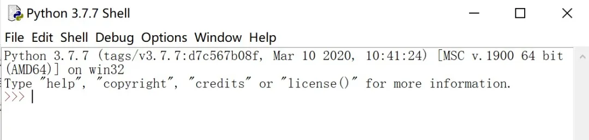

一切都要从搭建环境说起-Python基础连载(一)
开篇
在使用Python进行编程之前，首先需要搭建Python环境。如果你是第一次接触搭建Python环境这个名词，不用担心，这个过程非常简单，你只要跟着后面的环境搭建步骤一步一步的操作就可以了。
为什么需要搭建环境
温馨提示:这一部分属于扩展的知识，与环境搭建部分是独立的，对于非计算机专业的同学来说，看不太懂也没关系，直接跳转到下一部分阅读也无妨哦
在介绍环境搭建步骤之前，还是简要说一下为什么需要搭建环境。
计算机所能识别的，其实只有两个数字，即二进制中的0和1，由0和1的各种组合编写出来的代码被称为二进制代码，一组有意义的二进制代码构成了一条指令，这条指令被称为机器语言的一条语句。
面对机器语言中一堆堆的0和1，不管是读还是写都很让人头大，于是有人在机器语言的基础上，编写了一些指令，用于替代机器语言中一堆堆的0和1，这样便形成了汇编语言。汇编语言的每条指令与机器语言所实现的某一个功能是一一对应的，但缺点也很明显：符号繁多、无可移植性。
于是前辈们为了能”偷懒”，又开始了进一步的探索。
终于，高级语言问世了！
包括Python在内的一些编程语言，比如C，C++等，它们都有一个共同的特性，那就是语法规范，符合人类的逻辑认知，并且与计算机硬件关系不大，从而我们可以很容易的专注于在逻辑上实现自己的想法，而无需考虑底层的内存操作如何运作。这些语言都属于同一个大类，那就是今天被广泛使用的高级语言。
现在，回到正题，为什么需要搭建环境？
简单来讲，Python是高级语言，而计算机只能处理包含0与1的机器语言，所以，我们需要一种“工具”，它可以把我们书写的Python代码转换为计算机所能理解并处理的机器语言。而这种“工具”，在搭建环境完成之后，便存在了。这里面包含Python解释器这个“工具”，它可以将我们书写的每一行代码“翻译”成计算机所能理解的东西。因此，你在使用Python进行优雅的编程之前，必须先搭建好Python环境。
如何搭建环境
搭建环境，无非就是下载安装软件，配置环境变量等步骤。
如果你跟随接下来的步骤进行操作，可以让搭建过程更简单。
Let’s get started~~~
对于初学者而言，最容易上手的便是从Python官网进行下载以及后续操作，具体步骤如下：
(以下操作均在windows系统上进行)
**1.**访问Python官网（https://www.python.org/）
进入到这个界面

**2.**点击Downloads,来到这个界面
**3.**点击Download Python 3.8.3，可以直接下载最新的与你的系统适配的windows版本。下载完成之后得到一个.exe文件，双击进行安装，你会来到这一界面

**4.**在进行下一步之前，你需要将Add Python 3.8 to PATH勾选上，这样可以免去手动设置环境变量的麻烦，就像下图这样
**5.**现在，点击Install Now，等待安装完成即可。
至此，你已经配置好了Python环境。
初探Python
在完成环境搭建之后，就可以打开IDLE(你可能不知道它是什么，没关系，将它看成一个普通的软件即可)进行编程啦！
在你完成上一部分的步骤之后，IDLE就已经附带着安装到你的计算机中了，只不过并没有在桌面上创建快捷方式，所以需要手动搜索，具体操作如下图所示：（ps：我是以前安装的3.7版本，你的应该会显示3.8版本）
点击打开，便来到了这一界面：

在>>>上面的那一段文字是关于版本的介绍以及一些提示信息，你大可不必理会。
在>>>后面的光标会闪动，代表你可以在>>>后面编写你的Python语句。
在编写完成之后，敲一个大大的回车，便可以即时看到运行结果。下面是一个小栗子：

看，我们的Python语句被执行了！
这里的**print()**具有打印功能，也就是将结果输出显示到屏幕上，具体用法将会在后面介绍，你现在只要记住它具有打印输出功能就可以了。
闪动的光标也移到了下一行，代表你再次输入时需要从第二个>>>之后开始。
之后也是同样的操作，你只要记住，每次输入都要在最下面一行的>>>之后开始。
以上的编程方式是交互式的，通俗来讲，就是你写一句代码，只要按下回车，Python就会立即执行你的这一句代码。
这种方式虽然方便，但如果你希望将所写的代码保存起来与朋友共享，这种方式会表现的极其糟糕。下面举一个栗子(如果你是完全零基础，可能代码会看不懂，没关系，在后面会讲到，这里只是拿来举例说明)：

这是使用交互式方式写的代码，功能是实现两个变量之间的加法运算。现在，你希望将这段代码保存起来并分享给另一个同学，你会怎么做？
在介绍怎么做之前，首先要了解的是，在IDLE中，除了使用交互式的命令行之外，还有另一种编程方式，那就是创建一个脚本文件（你已经知道，图像文件的后缀名为.jpg或.png等，同样，所谓的脚本文件，其实就是一个文本文件，只不过后缀名是.py），在脚本文件中写完全部代码之后，运行该脚本文件即可。
【注1】脚本文件的创建方式有两种，其一是点击File->NewFile，其二是使用快捷键Ctrl+N
【注2】脚本文件的运行方式也有两种，其一是点击Run->RunModule,其二是使用快捷键F5
现在可以来讨论下怎么做了。我知道，有的同学可能会创建一个脚本文件，然后直接将命令行中的代码复制到该脚本文件中，就像下面这样：
但是，你直接将>>>也一起复制过来了，这是不对的，你应该删去它们，得到下面的结果：

然后就可以将其保存到计算机硬盘上并分享给你的朋友了。
但是如果你的代码有成百上千行，逐个删除>>>是一个非常恼人的操作，所以，我们一般都会在脚本文件中进行代码的书写。
当然，在学习一些简单的操作时，交互式的命令行不失为一种简单的方法，因为它提供了即时的输出，可以让人很清楚的明白每一行代码究竟做了什么事。
总结一下，那就是：
进行简单的操作，并且不需要保存所写代码时，首选交互式方式；
**如果希望长期保存代码，那就选择在脚本文件中书写，并保存该脚本文件即可。
**
下期开始，我们就正式进入Python的学习了，大家加油！